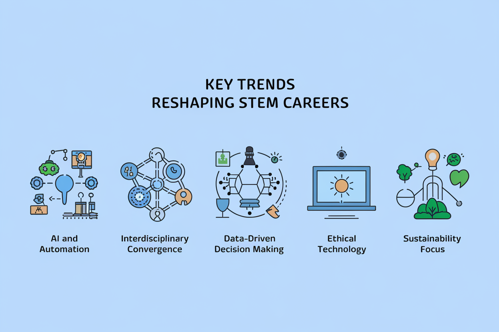

Chapter 7: Future-Proofing Your STEM Career in the AI Era
Welcome back! Last episode, we navigated the ethical minefield of AI-powered job applications. Now, we equip ourselves with tools for the AI-driven career landscape of tomorrow.
7.1 Understanding the Evolving STEM Landscape
The Fourth Industrial Revolution is characterized by the fusion of digital, biological, and physical innovations. As a STEM professional, you're surfing this wave while doing quantum calcs in your head.
Key Trends Reshaping STEM Careers:
- AI and Automation: AI is not just a tool but a collaborator. Somewhat like a super-smart intern who never sleeps or asks for a raise.
- Interdisciplinary Convergence: The lines between traditional STEM disciplines either no longer exist or are constantly moving.
- Data-Driven Decision Making: If you can't interpret complex data sets, you might as well be reading tea leaves.
- Ethical Technology Development: Don't let Skynet become self-aware on your watch.
- Sustainability Focus: STEM professionals are now expected to save the world, one algorithm at a time.
"The future belongs to those who learn more skills and combine them in creative ways." - Robert Greene
In other words, time to become the Swiss Army knife of STEM.

7.2 Emerging Technologies in Hiring and Career Development
Stay ahead by familiarizing yourself with the technologies shaping how companies recruit and develop talent.
AI-Driven Talent Acquisition and Management
- Predictive Analytics: Companies are using AI to predict candidate success based on complex data points. They're Moneyball-ing their way to the perfect team.
- Skills-Based Hiring: Traditional credentials are giving way to demonstrated skills. Your degree might get you in the door, but your GitHub repository will get you the corner office.
Blockchain for Credential Verification
Blockchain technology is creating tamper-proof records of educational and professional achievements.
- Your ongoing learning efforts will be more easily recognized and valued.
- Micro-credentials and specific skill certifications will gain importance.
Virtual and Augmented Reality in Recruitment
- VR is being used for immersive job interviews and skills assessments.
- AR-enhanced resumes and portfolios allow for interactive demonstrations of your work. Imagine your resume coming to life like the paintings in Hogwarts.
Pro Tip: Start experimenting with AR/VR platforms to create immersive presentations of your projects. This forward-thinking approach can set you apart in job applications.
7.3 Developing a Future-Proof Skill Set
To thrive in the AI era, cultivate a mix of technical prowess and uniquely human capabilities.
Technical Skills for the AI Era
- Machine Learning and AI: Understanding the basics is becoming as fundamental as computer literacy. Soon, not knowing AI might be like not knowing how to use a smartphone – possible, but why do that to yourself?
- Data Science and Analytics: The ability to derive insights from data is valuable across all STEM fields.
- Cybersecurity: As systems become more interconnected, protecting them becomes increasingly critical.
- Cloud Computing: Familiarity with cloud platforms is essential for scalable, collaborative work. Get your head ,in the clouds this time.
- Quantum Computing: While still emerging, awareness of its potential applications is forward-thinking. It could very well be like learning about computers in the 1960s – you might not need them now, but just you wait.
Essential Soft Skills for STEM Professionals
- Adaptability and Continuous Learning: The half-life of skills is shortening. Embrace lifelong learning, or risk becoming the human equivalent of a floppy disk.
- Complex Problem-Solving: AI can process data, but humans excel at novel, multifaceted problem-solving.
- Creativity and Innovation: The ability to think outside the box remains a uniquely human strength.
- Ethical Decision-Making: As technology's impact grows, so does the importance of ethical considerations.
- Cross-Cultural Communication: In a globally connected world, the ability to work across cultures is invaluable.
The Rise of 'Hybrid' Skills
The most in-demand professionals will be those who can bridge multiple disciplines. Examples include:
- BioInformatics: Combining biology with data science and AI.
- FinTech: Merging finance with cutting-edge technology.
- NeuroTechnology: Integrating neuroscience with AI and engineering.
"The illiterate of the 21st century will not be those who cannot read and write, but those who cannot learn, unlearn, and relearn." - Alvin Toffler
7.4 Strategies for Continuous Learning and Skill Development
In a rapidly evolving field, your ability to learn continuously is your greatest asset. Like a smartphone, your brain needs regular updates to stay relevant and avoid becoming obsolete.
Leveraging Online Learning Platforms
- MOOCs (Massive Open Online Courses): Platforms like Coursera, edX, and Udacity offer courses from top institutions.
- Micro-credentials: Short, focused programs that certify specific skills.
- Virtual Labs and Simulations: Gain hands-on experience with cutting-edge technologies in safe, simulated environments.
Participating in Open Source and Collaborative Projects
- Contribute to GitHub repositories to build your portfolio and learn from peers.
- Engage in hackathons and innovation challenges to apply your skills to real-world problems.
Developing a Personal Learning Network (PLN)
- Use social media platforms like Twitter and LinkedIn to follow thought leaders in your field.
- Participate in virtual conferences and webinars to stay updated on industry trends.
- Join online communities and forums specific to your STEM discipline.
Action Item: Create a learning schedule that allocates time each week for skill development. Set specific, achievable learning goals for the next 3, 6, and 12 months. Remember, Rome wasn't built in a day, but they were laying bricks every second.
7.5 Adapting Your Career Strategy for an AI-Augmented Workforce
Prepare for a future where human-AI collaboration is the norm. Less man vs machine, more man AND machine.
Identifying AI-Resistant Career Paths
Focus on roles that require:
- Complex decision-making and strategy formulation
- Emotional intelligence and interpersonal skills
- Creative and innovative thinking
- Ethical oversight and governance of AI systems
Positioning Yourself as an AI-Human Collaboration Expert
- Develop skills in AI interpretation and implementation.
- Become adept at translating between technical and non-technical stakeholders.
- Focus on areas where human oversight of AI is crucial, such as healthcare diagnostics or autonomous vehicle safety. We don't want AI deciding to "cure" headaches by removing heads.
Entrepreneurial Opportunities in the AI Era
- Identify niche markets where AI solutions can be applied to solve unique problems. Be the AI version of "there's an app for that."
- Develop AI-enhanced products or services that augment human capabilities in your field.
Case Study: The AI-Powered Drug Discovery Dynamo
Dr. Sarah Chen, a biologist, combined her domain expertise with machine learning skills to develop an AI-powered drug discovery platform, leading to a successful biotech startup. She went from studying cells to selling groundbreaking medical solutions faster than you can say "interdisciplinary innovation." The moral of the story? Don't just ride the wave of technological advancement – be the one making the waves!
7.6 Building a Future-Proof Personal Brand
Your personal brand should reflect your adaptability and forward-thinking approach.
Developing a Narrative of Continuous Evolution
- Document your journey of skill acquisition and adaptation.
- Showcase projects that demonstrate your ability to apply emerging technologies to solve problems.
Cultivating an Online Presence that Demonstrates Thought Leadership
- Start a blog or podcast discussing emerging trends in your field.
- Create content that bridges current practices with future possibilities.
- Engage in online discussions and offer insights on platforms like LinkedIn and Twitter.
Leveraging AI Tools for Personal Brand Enhancement
- Use AI-powered analytics to refine your content strategy and engagement.
- Employ AI writing assistants to maintain a consistent and engaging online presence.
Pro Tip: Create a personal website that serves as a dynamic portfolio, showcasing your projects, skills, and thought leadership content.
7.7 Navigating Ethical Challenges in an AI-Driven Career Landscape
As a STEM professional, you have a responsibility to address the ethical implications of AI in your field.
Developing an Ethical Framework for AI in Your Discipline
- Familiarize yourself with ethical guidelines specific to your field, such as the IEEE Ethically Aligned Design for AI systems.
- Engage in thought experiments and case studies to sharpen your ethical decision-making skills.
Becoming an Advocate for Responsible AI Development
- Participate in professional organizations focused on ethical AI, such as the Association for Computing Machinery's Special Interest Group on Artificial Intelligence. Or start the Justice League of AI ethics.
- Contribute to the development of AI governance policies in your industry. Be the Thomas Jefferson of the AI constitution.
Balancing Innovation with Ethical Considerations
- Develop strategies for promoting ethical AI use while driving technological advancement.
- Study case studies of successful ethical AI implementations in STEM fields. Learn from the best to become the best.
"With great power comes great responsibility." This adage has never been more relevant than in the age of AI. Remember, you're not just building the future – you're designing and shaping it. Make it a good one!
7.8 Preparing for AI-Augmented Job Roles
Understand how AI will complement rather than replace human expertise in STEM fields.
AI as a Collaborator: New Models of Work
- Familiarize yourself with AI tools specific to your field, such as AI-powered data analysis in research or generative design in engineering.
- Develop skills to effectively "manage" AI assistants, focusing on task delegation and result interpretation.
Redefining Productivity in the Age of AI
- Shift your focus from repetitive tasks to high-level problem-solving and creativity. Let AI handle the grunt work while you tackle the big ideas.
- Learn to measure success in AI-augmented roles, focusing on impact and innovation rather than traditional productivity metrics. Quality over quantity – because when quantity is handled by AI, your quality is what sets you apart.
Psychological Preparation for Working Alongside AI
- Cultivate a growth mindset that views AI as an enhancer of human capabilities.
- Stay informed about the latest AI developments in your field to maintain confidence in your role.
Action Item: Identify an AI tool relevant to your work and spend a week integrating it into your workflow. Reflect on how it changes your productivity and the nature of your work.
7.9 Global Perspectives on STEM Careers in the AI Era
AI adoption and impact vary significantly across the globe, creating both challenges and opportunities. It's time to think globally and act locally.
Regional Variations in AI Adoption and Impact
- Research AI integration in STEM fields across different countries to identify global opportunities.
- Understand how cultural and economic factors influence AI adoption in various regions.
Preparing for International Career Opportunities
- Develop cross-cultural competencies for a globally connected AI landscape.
- Familiarize yourself with international regulations and ethical standards for AI.
The Role of STEM Professionals in Bridging the Global AI Divide
- Explore opportunities for mentorship and knowledge sharing with emerging tech hubs.
- Consider how your skills can contribute to equitable AI development worldwide.
"Think globally, act locally." Apply this principle to your STEM career by considering the global impact of your work. You're not just building a career – you're shaping the future of our planet.
7.10 Creating Your Future-Proof Career Roadmap
Develop a personalized strategy for navigating your STEM career in the AI era.
Conducting a Personal SWOT Analysis for the AI Age
- Strengths: Identify your unique skills and experiences that set you apart in an AI-driven world. What's your professional superpower?
- Weaknesses: Recognize areas where you need to upskill or adapt. These aren't flaws – they're opportunities for growth.
- Opportunities: Look for emerging fields or roles where your skills could be valuable. Where's the next gold rush in your industry?
- Threats: Identify potential challenges, such as automation in your current role. Forewarned is forearmed!
Setting Adaptable Career Goals
- Use the SMART framework (Specific, Measurable, Achievable, Relevant, Time-bound) to set goals, but build in flexibility. Your career plan should be more like a GPS that recalculates the route, not a rigid paper map.
- Regularly reassess and adjust your goals based on technological advancements and industry changes.
Crafting a 5-Year Plan with Built-In Flexibility
- Create a roadmap with key milestones, but be prepared to pivot based on emerging opportunities.
- Include regular check-ins to reassess your direction and make course corrections.
Action Item: Draft your 5-year career plan, including specific goals for skill development, career advancement, and personal branding. Schedule quarterly reviews to assess your progress and adjust as needed. Remember, in the world of AI and STEM, the only constant is change – so make your plan as adaptable as you are.
Chapter Summary
Congratulations, future-proof STEM superstars! You've just leveled up your career strategy for the AI age. To recap:
- Understand the evolving STEM landscape and embrace emerging technologies in hiring and career development.
- Develop a future-proof skill set that combines technical expertise with essential soft skills.
- Adopt strategies for continuous learning and position yourself for success in an AI-augmented workforce. (Your brain is the ultimate renewable resource – keep refining it.)
- Build a personal brand that showcases your adaptability and forward-thinking approach.
- Navigate ethical challenges and prepare for AI-augmented job roles.
- Consider global perspectives and create a flexible, future-proof career roadmap. (Think globally, act locally, succeed universally.)
Remember, the future of STEM is not about competing with AI, but about leveraging it to push the boundaries of what's possible. By embracing continuous learning, ethical leadership, and adaptability, you can not only future-proof your career but also play a pivotal role in shaping the AI-driven world of tomorrow.
Practical Exercises: Become the Architect of Your AI-Enhanced Future
Time to put your newfound future-proofing skills to the test:
- Conduct a personal SWOT analysis considering the impact of AI on your field. Identify three actions you can take to address a weakness or capitalize on an opportunity. Even Tony Stark had to upgrade his suit at times.
- Research three emerging technologies or trends in your STEM discipline. Create a learning plan to develop relevant skills for each over the next 6 months.
- Draft a 1-year, 3-year, and 5-year career plan that incorporates AI advancements and continuous learning. Include specific, measurable goals for each timeframe.
- Identify an ethical challenge related to AI in your field. Write a brief essay (500 words) on how you would approach this challenge, considering both technological and ethical perspectives.
- Create or update your LinkedIn profile to reflect the future-proof personal brand discussed in this chapter. Ensure it showcases your adaptability and forward-thinking approach.
Remember, in the rapidly evolving world of STEM and AI, the best way to predict the future is to create it. So go forth and create a future that even sci-fi writers would envy!
Looking Ahead
You've now mastered the art of future-proofing your STEM career in the AI era. In the final chapter, we'll explore real-world case studies of STEM professionals who have successfully navigated AI-driven career transitions. These stories will bring to life the strategies we've discussed and provide inspiration for your own career journey in the AI era. Get ready to meet the pioneers who are already living in the future we've been preparing for.
Quiz: "Chapter 7 Future-Proofing Knowledge Check"
-
What is a key characteristic of the Fourth Industrial Revolution?
-
Which of the following is NOT mentioned as an essential soft skill for STEM professionals in the AI era?
-
What is a 'hybrid' skill in the context of future STEM careers?
-
How can blockchain technology impact credential verification in STEM careers?
-
What is a recommended strategy for continuous learning in STEM fields?
Answers: 1-b, 2-c, 3-c, 4-a, 5-c
How did you do? If you aced it, congratulations! You're well on your way to becoming a future-proof STEM superstar. If not, don't worry – even Tony Stark had to start somewhere. Keep studying, and soon you'll be navigating the AI-driven future like a pro!